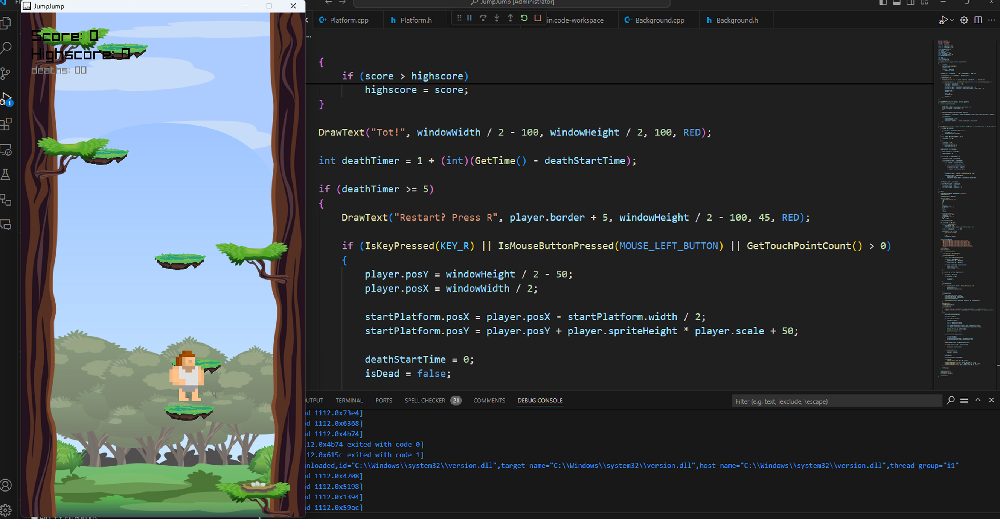

ProjektJumpJump im Browser — Wie ich C++ zu WebAssembly kompiliert habe
Einen Platformer in C++ entwickeln ist eine Sache. Ihn über WebAssembly im Browser spielbar zu machen, eine ganz andere. Hier beschreibe ich den Weg von der lokalen Exe zur Web-App.